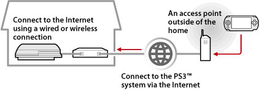

Network > Using remote play (via the Internet)
Using remote play (via the Internet)
To use this feature, you may be required to update the system software of the PS3™ system and the PSP™ system.
Using your PSP™ system and a wireless access point (such as that found through a commercial wireless hotspot (wireless LAN) service), you can connect to the PS3™ system that is located within your home via the Internet. To use remote play from outside your home, the PS3™ system must be set in remote play connection standby mode.

Hint
The method of using a commercial wireless hotspot (wireless LAN) service and the charges for such use vary depending on the service provider. For details, contact the service provider.
Preparing (1) (PS3™ and PSP™ systems)
To use remote play for the first time, you must register (pair) the PSP™ system with the PS3™ system. Register the system under  (Settings) >
(Settings) >  (Remote Play Settings) > [Register Device].
(Remote Play Settings) > [Register Device].
Preparing (2) (PS3™ system)
Set the PS3™ system to enter standby mode. You must set [Remote Start] to [On] so that you can turn on the PS3™ system from the PSP™ system.
1. |
Perform the following steps on the PS3™ system:
|
|---|---|
2. |
Turn off the PS3™ system. |
 (Users).
(Users). (Turn Off System) to turn off the system and to put it into standby mode. Check that the power indicator is lit solid red.
(Turn Off System) to turn off the system and to put it into standby mode. Check that the power indicator is lit solid red.Hint
For details on the settings described in step 1, see (Settings) > (Remote Play Settings) > [Remote Start] in this guide.
Preparing (3) (PSP™ system)
Create a network connection to connect the PSP™ system to an access point. To use remote play via the Internet, you can use an access point such as a commercial wireless hotspot (wireless LAN) service. For details, refer to the user's guide for the PSP™ system.
Using remote play
1. |
On the PSP™ system, select |
|---|---|
2. |
Select [Connect via Internet]. |
3. |
From the list of connections, select the connection for the access point to be used for remote play. |
4. |
Enter the PlayStation®Network sign-in ID and password for the account in use.
|
 (Network) >
(Network) >  (Remote Play).
(Remote Play).
Quitting remote play
Press the PS button (HOME button) on the PSP™ system, and then select [Quit Remote Play] > [Quit and Turn Off the PS3™ System].
Hint
Select [Quit Without Turning Off the PS3™ System] if you are using your PS3™ system to copy files, or to perform background downloading and other tasks that require you to keep your system on.
Using remote play via the Internet
You may not be able to use remote play via the Internet depending on the network device in use. If this happens, check the following information.
- Use [Internet Connection Test] in
 (Network Settings) under (Settings) to check that the PSP™ system can connect to the Internet and PlayStation®Network.
(Network Settings) under (Settings) to check that the PSP™ system can connect to the Internet and PlayStation®Network. - If the router in use supports UPnP, enable the router's UPnP function.
- If the router in use does not support UPnP, you must set the router's port forwarding to allow communication to the PS3™ system from the Internet. The port number that is used by remote play is TCP: 9293. For information about setting this option, refer to the instructions supplied with the router.
- Port forwarding is a function for forwarding signals that arrive at a specific port (entrance) to another specified port (exit). This is also referred to as "port mapping" or "address conversion."
- If the PS3™ system is connected to the Internet via two or more routers, communication may not work correctly.
Hints
- A router is a device that allows multiple devices to share a single Internet line.
- Communication may be restricted depending on the security functions provided by the router and Internet service provider. Refer to the instructions supplied with the network device in use and information from your Internet service provider.